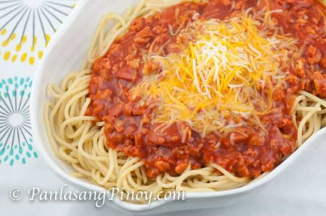

Filipino Spaghetti

Description
Filipino spaghetti is a Filipino adaptation of Italian spaghetti with Bolognese sauce. It has a distinctively sweet sauce, usually made from tomato sauce sweetened with brown sugar and banana ketchup. It is typically topped with sliced hot dogs or smoked longganisa sausages, giniling, and grated cheese.
Ingredients
- 1/2 tablespoon vegetable oil
- 1 tablespoon butter
- 1/2 cup onion finely chopped
- 1/2 cup carrot finely chopped
- 1/2 cup celery finely chopped
- 1 tablespoon garlic finely chopped
- 250 grams pork
- 250 grams beef
- 2 pieces bay leaf
- 7 pieces vienna sausage diced
- 2 cups tomato sauce use sweet-style sauce
- 1/2 cup water
- 1 piece knorr chicken cubes
- 1/2 teaspoon liquid seasoin
- salt
- 350 grams spaghetti noodles cooked according to package directions
- 1/2 cup quick-melting cheese grated
Instructions
- In a medium skillet, heat oil and melt butter. Add onions, carrots, and celery; cook until vegetables are tender. Add garlic and sauté until fragrant.
- Add ground round, ground pork, and bay leaves. Brown the meat for about 10 minutes. Halfway through cooking, add the Vienna sausage; mix well. Remove the excess oil.
- Pour in tomato sauce, Knorr Chicken Cubes, and water or stock; mix well. Let meat mixture simmer over low heat for 8 to 10 minutes. Season with liquid seasoning, salt, and pepper. Continue to cook for 1 to 2 minutes.
- When ready to serve, toss pasta with meat sauce until well combined. Top with grated cheese or serve cheese on the side.